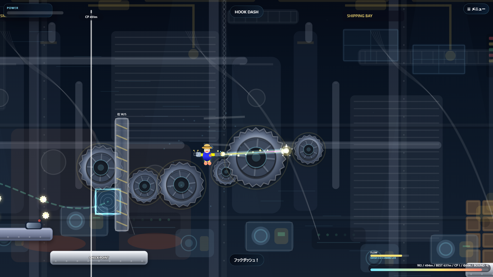

フックショット工場からの脱出を作りました！

```今回は、フックショットを使って工場の中を進んでいくアクションゲームを作りました。
タイトルは「フックショット工場からの脱出」です。巨大な工場の中で、ニコリヒトがフックショット機械を使いながら、歯車やファン、空気噴射、柱などのギミックを突破していきます。
このゲームの一番のポイントは、ただジャンプするだけではなく、フックを引っかけて、タイミングよく飛ぶところです。マウスでフックを撃って、Spaceキーでフック方向へ飛ぶので、うまく操作できるとかなり気持ちいいです。
ステージには大型歯車やファンなど、いろいろな仕掛けがあります。どのルートで進むかを考えながら動くので、アクションだけではなく、少しパズルっぽいところもあります。
最初は固定チュートリアルから始まります。操作に慣れてから本編に進めるので、はじめて遊ぶ人でも少しずつ感覚をつかめるようにしました。
本編は小分けのワールド制になっています。ワールドの最後にある紫ポータルにフックを当てると、次のワールドへ進みます。次にどんなステージが出るか分からないので、毎回ちょっとした緊張感があります。
操作は、マウス長押しから離すとフックショット、A/Dで揺れ、W/Sでロープ調整や柱登りができます。Shiftでフックダッシュ、Cでキャンセルもできます。
さらに、チェックポイントやワールドクリアで「ニコリギア」を集められるようにしました。ニコリギアを使って、見た目やアクセサリーを買えるショップ要素も入っています。
難しいステージで何回も失敗したときには、お助けモードも出るようにしています。お手本プレイを見たり、ステージをスキップできるので、どうしても進めないときも安心です。
スマホでも遊べるように、タップ操作にも対応しています。左側で移動、右側でフックやジャンプができるので、PCがなくても試せます。
フックショットの動きが決まるとかなり楽しいゲームになったので、ぜひ遊んでみてください。